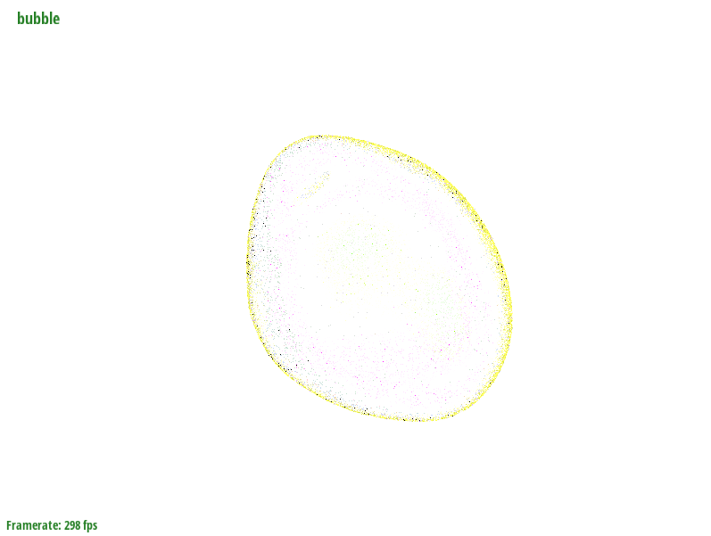
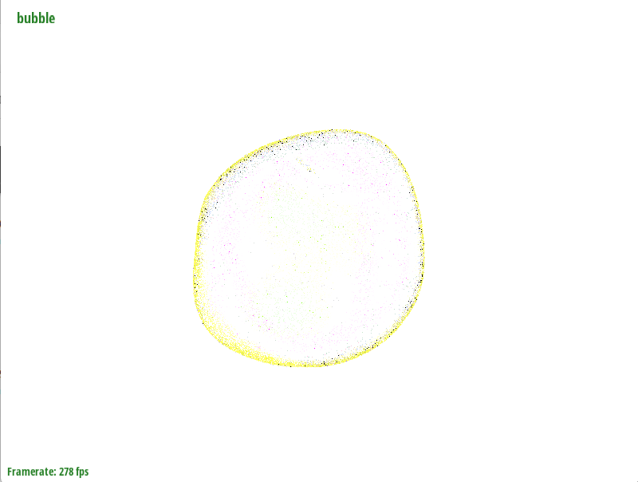
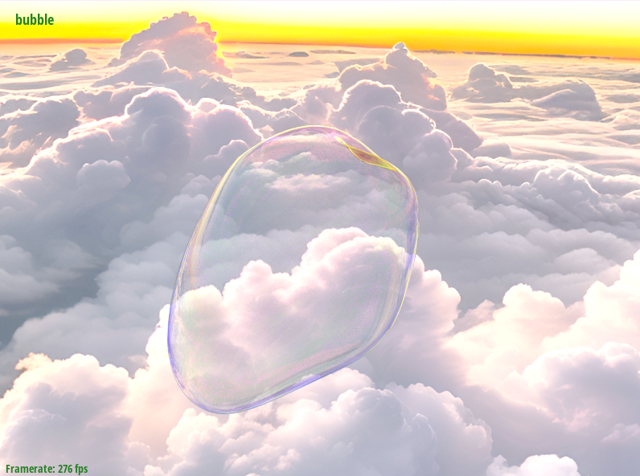
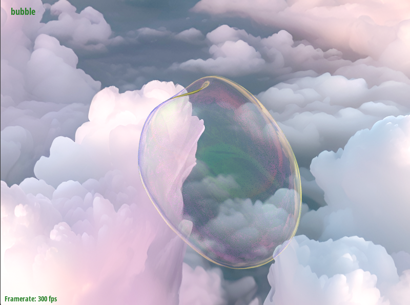

CS184 Spring 2025 Final Project: Realistic Bubble Simulation
Overview
In this project, we aim to create a realistic soap bubble simulation and render the characteristic iridescent surface appearance. This problem is important for applications in animations, films, video games, virtual reality experiences, and scientific simulations. Our approach is inspired by A Hyperbolic Geometric Flow for Evolving Films and Foams (Ishida et al., 2017), implementing thin-film dynamics to model bubble behavior.Setup of the Environement
We extended the CS184 pathtracer framework to create our bubble simulation system, with a custom classBubbleHGF that
connects the bubble physics with a HalfedgeMesh structure.
We setup a dual rendering pipeline:
- A real-time OpenGL viewer for interactive simulation updates and debugging (with wireframe visualization via the
mkey) - A high-quality ray tracer for photorealistic output, capturing iridescence through spectral rendering.
Simulation
Theory
Bubbles are governed by the Navier-Stokes equation, since they are ultimately fluids. However, because bubbles are extremely thin, surface tension becomes the dominant force. Accurately resolving surface tension effects in the Navier-Stokes framework requires an extremely fine computational grid, which is impractical. Therefore, an alternative modeling approach is needed.
The most intuitive physical model for a bubble film is Newton's second law \(F = M \ddot{x}\), where the force \(F\) is proportional to the Laplace-Beltrami operator \(\Delta\) applied to the surface embedding, as it acts as a smoothing operator to model surface tension.
Another point of view is from variational mechanics, where the equilibrium (stationary) shape of a soap bubble is the solution to minimizing surface area \(A[x]\) while preserving the enclosed volume of air. Hence it is natural that the bubble's force to be driven towards this solution, we let \(\ddot{x}=\text{d}A/\text{d}x\) which is the functional derivative. In differential geometry, the variation of \(A[x]\) is also equivalent to the mean curvature vector \(H {\bf n}\), and the identity \(\Delta x = 2H{\bf n}\) shows the equivalence of the three different interpretations of the physical model.
The interpretation of mean curvature and Laplace operator allows us to discretize the operator into well known matrices, and the interpretation of area functional is important for proving the correctness of this formulation.
Forward Kinematics and Velocity Update
Since \(F = M \ddot{x}=\Delta x\), the partial differential equation we need to solve is \(\ddot{x}=M^{-1}\Delta x\). Then, we discretize the surface using a triangular mesh, and we discretize each term on the right as the following matrices:
- Mass Matrix We let \(M\) to be a diagonal mass matrix defined using surface area. Specifically, each vertex accumulate \(1/3\) of the surface area of each of the triangle its adjacent to.
-
Cotangent Laplacian it is well known that the discretization of \(\Delta\) is the cotangent-weighted Laplacian \(L\). Assume \(i,j\) are two vertices on the surface connected by an edge, and \(\alpha,\beta\) are the angles opposite the edge in the two adjacent triangles, then the cotangent-weighted Laplacian \(L\) is defined as
\[L_{ij} = \frac{1}{2} \left( \cot \alpha + \cot \beta \right),\quad L_{ii}=-\sum_{j\in N(i)}L_{ij}\]where \(N(i)\) are all vertices connected to \(i\) through an edge.
- Position matrix We discretize \(x\) using the triangular mesh by putting all vertex positions in different rows.
Volume correction
This process, even in continuous form, does not preserve energy, thus we have to perform volume correction step correctVolume() after each iteration.
We do this by computing the current bubble volume and apply a uniform scaling about the center of mass.
Specifically, we define
where \(\mathbf{p}_i\) is the location of the \(i\)th vertex, then the correction step is
Isotropic Remeshing
Forward kinematics steps could result in mesh irregularities, especially near poles where vertices may clusters. This happens because:
- Pole Divergence: Vertices near poles experience higher curvature forces, causing them to accelerate faster and more clustered.
- Edge Length Disparity: Some edges stretch too much (> 4L/3), while others shrink (< 4L/5), leading to poor mesh quality.
Forward kinematics over time: from left to right, frames show simulation steps at 0, 10, 20, 30, 40, 50 iterations.
In order to avoid irregularities, we apply isotropic remeshing. Specifically, we iteratively apply the following steps:
- Split edges over 4/3rds mean edge length
- Collapse edges less than 4/5ths mean edge length
- Flip edges to improve vertex degree
- Move vertice tangentially towards centroid
One important detail is that during topology change, we also need to update the velocity. We do so by averaging or interpolating existing velocities using the barycentric mass from surface triangles. Specifically, for a new vertex of edge split, its velocity is computed as \[ \mathbf{v}_{\text{new}} = \frac{m_0\,\mathbf{v}_0 + m_1\,\mathbf{v}_1}{m_0 + m_1} \] where \(v_0,v_1\) are the velocities of each vertex of the edge and \(m_0,m_1\) are the mass. Similarly, if we collapse an edge we use the same formula.
Thus, we have the following full remeshing pipeline
- Compute mean edge length
-
Iterative remeshing (outerIterations = 5)
For each outer iteration:- Collapse edges shorter than a threshold (e.g. 0.8 × L).
- Split edges longer than a threshold (e.g. 1.33 × L).
- Flip all edges that decrease the total deviation from degree 6.
- Apply tangential smoothing for a small number of steps (e.g., 5) to relax vertex positions while minimizing normal displacement.
-
Flag topology changed by setting
topologyUpdated = trueto trigger dependent systems to rebuild their representations
Through this iterative process, we maintain mesh quality during dynamic simulation by periodically adjusting edge lengths and redistributing vertices. The resulting mesh exhibits relatively uniform triangle sizes, optimized vertex connectivity (with valence near 6), and evenly spaced vertices that preserve the original surface geometry. All topological changes maintain physical consistency, enabling the simulation to continue seamlessly on the updated mesh and preventing instability caused by degeneracies such as pole clustering or extreme edge disparities.
Forward kinematics over time with remeshing: from left to right, frames show simulation steps at 0, 20, 40, 60, and 80 iterations.
Rendering
Physics
In rendering the bubbles for this project, we extended the HW3 code to incorporate physically accurate thin-film transmission and reflection. A bubble is essentially an extremely thin double surface. When light enters from one side, it can bounce back and forth between the two interfaces. However, because the film is so thin, these internal reflections have little effect on the final exit direction of the light. Therefore, we use Snell��s Law directly to determine the exit angle.
The internal bounces of light within the bubble require accurate physical modeling. This is achieved using Fresnel coefficients, which are complex quantities that describe how the amplitude and phase of the electromagnetic field change for perpendicular and parallel polarizations during a single reflection or transmission event.
The f|3 case is analogous for \(r_{12}^*\), \(t_{12}^*\).
The above calculations assume that the Fresnel coefficients correspond only to phase shifts of \(0^\circ\) or \(180^\circ\). However, this simplification is insufficient for accurately simulating light behavior in thin films. To capture the true interference effects, we must also account for the continuous phase change introduced by the optical path difference within the film. This is represented by the complex factor \(e^{i\delta}\), where \(\delta\) is the phase thickness determined by the film's refractive index, thickness, and the wavelength of light.
Using the computed Fresnel coefficients, we perform an Airy summation to account for the infinite series of reflections within the thin film. Since each successive bounce is scaled by a constant complex factor (\(r_{01}r_{12}e^{2i\delta}\)), this summation can be expressed as a geometric series, leading to the Airy closed-form solution.
From the total polarization amplitudes of reflection and transmission, we can compute the corresponding light intensities by taking \(R^* = | r_{tot}^* |^2\) and \(T^* = ( n_3\cos \theta_3 / ( n_0\cos \theta_0 ) ) \cdot | t_{tot}^* |^2\). Finally, assuming the incident light is unpolarized, we obtain the final reflected and transmitted intensities by averaging the results for perpendicular (\(s\)) and parallel (\(p\)) polarizations \(R = ( R^s + R^p )/2, \quad T = ( T^s + T^p )/2\).
Bubble BSDF
The implementation of our bubble bsdf computes the following: we compute the reflectance and transmittance for each RGB wavelength, then we use sRGB weights to calculate the reflected intensity \(w_R\) and transmitted intensity \(w_T\) perceived by the human eye. Finally, we calculate the light reflection probability \(p_R = w_R / (w_T + w_R)\) to randomly choose the current light ray to be reflected or transmitted, effectively simulating both with just one ray.
- Reflection: perfect mirror (locally reflect). \(f_{refl} = ( R_{rgb} \cdot p_R) / |\cos \theta_i|\).
- Transmission: for a single-sided thin film, approximate as straight-through (locally \(\omega_i = -\omega_o\)) and \(f_{trans} = ( T_{rgb} \cdot p_T ) / |\cos \theta_i|\).
|

|

|
Skybox
To enhance visual richness and avoid a monotonous background, we implemented a skybox so that bubbles could reflect and refract more varied and realistic colors instead of appearing in a blank scene. We loaded six images, each mapped to one face of the cube, forming a complete surrounding environment.

|

|

|

|
|

|
In the view matrix, we set \(v(0,3) = v(1,3) = v(2,3) = 0\) to remove translation while preserving rotation, ensuring that the cube remains stationary relative to the camera and appears infinitely distant.
For path tracing, we created a PathtracingSkybox::sample method that takes a normalized direction vector as input, determines which cube face this direction intersects, converts it to 2D texture coordinates, and returns the corresponding pixel color from that face.
This method enabling the path tracer to return accurate background colors when rays miss all geometry.
|

|

|
Implementation Details
For modularity, the bubble class is an abstract class that's able to return a path-tracable object and able to step forward by an amount of time. We also used a Mesh Capture Optimization System to intelligently manage mesh data updates while minimizing computational overhead for both real-time OpenGL rendering and offline path tracing. The optimization strategy includes:
- Uses state flags (topologyUpdated and verticesUpdated) to determine the minimal required updates: only rebuild when connectivity changes otherwise handle vertices update though partial refresh
- Material Reuse: All triangles share one BubbleBSDF material, saving memory and keeping shading consistent.
Conclusion and Future Work
We successfully implemented a physically-based bubble simulation and rendered its iridescent appearance through spectral path tracing. Future work will pursue four key directions: (1) implementing collision detection that handles interactions with both rigid bodies and fluid surfaces, (2) extending the system to model non-manifold bubble clusters for realistic foam simulation, and (3) developmenting interactive manipulation capabilities to allow user-directed bubble behaviors.Contributions
- Carl Sun: Project architecture, simulation, GUI development, and system integration, skybox, BSDF, and general debugging
- Kunhong Lyu: BSDF and pathtracing implementation for iridescent bubble rendering
- Isabella Hu: Isotropic remeshing implementation
Reference
- FIELD, D. A. 1988. Laplacian smoothing and delaunay triangulations. International Journal for Numerical Methods in Biomedical Engineering 4, 6, 709–712.
- ALMGREN, F. J. AND TAYLOR, J. E. 1976. The geometry of soap films and soap bubbles. Scientific American 235, 82–93.
- AMBROSIO, L. 2015. Regularity theory for mass-minimizing currents (after Almgren-De Lellis-Spadaro). Calculus of Variations and Geometric Measure Theory, 1–23.
- ISHIDA, S., YAMAMOTO, M., ANDO, R., AND HACHISUKA, T. 2017. A Hyperbolic Geometric Flow for Evolving Films and Foams. ACM Trans. on Graphics 36, 6, 199:1–199:11.
- WANG, M., DENG, Y., KONG, X., PRASAD, A. H., XIONG, S., AND ZHU, B. 2021. Thin-Film Smoothed Particle Hydrodynamics Fluid. arXiv:2105.07656.
Presentation Materials